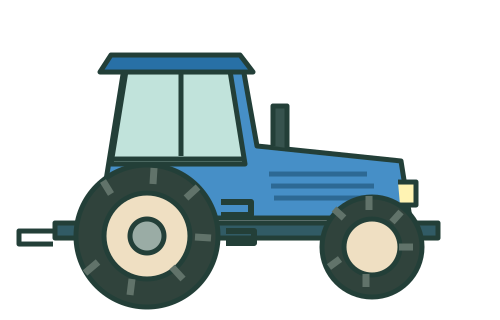

Look.
A camera collects an image. Sensors can add measurements, such as soil moisture.
MEET FIELD ROVER 01
A curious little companion for a big day outside.
Explore how AI could help a grower see more.

Tap a numbered part. Find a little possibility.
01 / THE INTELLIGENCE BIT
Artificial intelligence is software that uses inputs to produce predictions, recommendations or content. Machine learning is one approach: it learns patterns from examples rather than needing a separate rule for every case. [1]
A camera collects an image. Sensors can add measurements, such as soil moisture.
A trained model compares patterns with what it learned from earlier examples.
It suggests what needs attention. The grower checks the evidence and decides. [2]

Same love for the land.02 / BETTER TOGETHER
AI could help spot crop problems earlier, organise field observations and target resources more carefully. Agricultural automation can improve efficiency, but benefits depend on the farm, cost and conditions. [3]
The blue tractor represents familiar farm tools. The rover imagines a scouting teammate; neither replaces a farmer’s knowledge.
Let’s talk about the muddy bits ↘03 / KEEPING IT GROUNDED
Shade, unfamiliar crops and poor images can mislead a model. Uneven training data can make it work better for some farms than others. Test locally and keep human review. [2]
Cloud-dependent tools can lose service during internet or power outages. Our proposed design would need local safe-stop controls. AI infrastructure also uses electricity; demand needs planning. [4]
My view: useful farm AI should be repairable, affordable and clear about uncertainty. Farmers need control over their data, secure software and practical training. Adoption could otherwise widen existing gaps. [3]
A LITTLE SOMETHING FOR YOUR LAND
Choose a crop and a scouting focus. Take home your concept build.
This website uses a farm story to make AI feel approachable. The orchard introduces the machine, while the product page lets visitors explore individual parts before reading about benefits and limits. Warm colours, a blue tractor and apple illustrations connect the technology to familiar farm life.
The site uses semantic HTML, a shared CSS file and a small JavaScript file. CSS and browser animations move the rover and apple. Numbered buttons reveal proposed part descriptions. The configurator downloads a summary; it does not process orders. Relative paths keep the two pages and assets portable. Keyboard controls, visible focus styles and reduced-motion support make the experience easier to use.
ChatGPT assisted with writing, code and design. An AI image tool adapted the supplied rover reference into a transparent cutout. The tractor, tree and landscape are original SVG illustrations. Source links support general AI claims; product functions are explicitly imagined. Desktop and mobile checks informed spacing and interaction changes. The site author should review the final content and explain these choices before submitting.
AI assistance: ChatGPT helped draft the content and code; AI image generation created the rover cutout from the supplied reference. This is an educational concept, not a commercial listing.